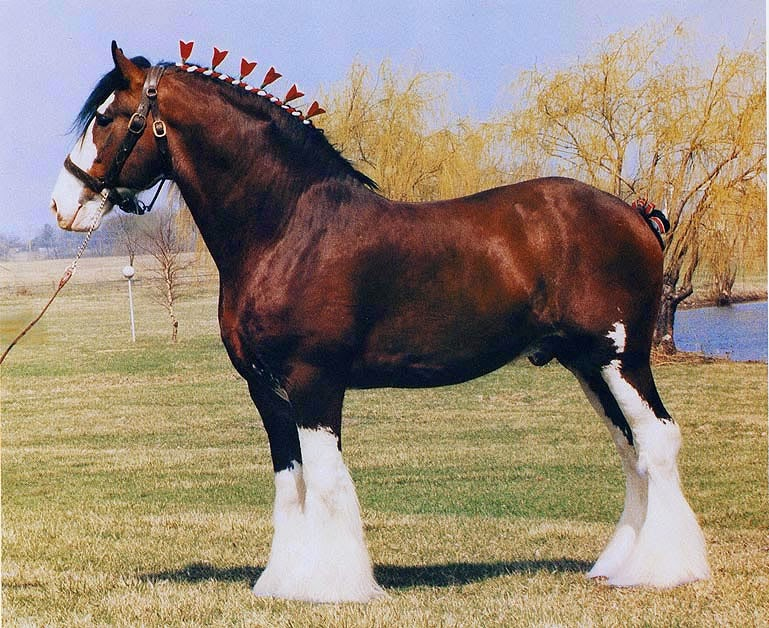

Essas são as raças da minha preferencia
SÃO CAVALOS DE RODEIO, EXPOSIÇÃO, PARA TER DE PET E OUTROS
Há duas hipóteses para a formação da espécie eqüina. A primeira é que eles seriam originários de cavalos da Ásia Central, a segunda, de animais da América Setentrional, de onde emigraram para a Ásia, quando o Alasca ainda era ligado àquele continente pelo estreito de Bering (TEIXEIRA, 1995).
Quais são eles?
Manga Larga

Friesian
Marwari
paint horse
Appaloosa

Clydesdale
Fjord